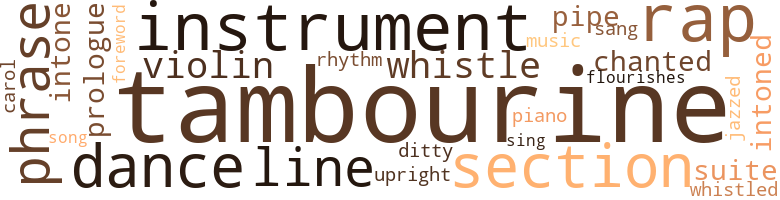
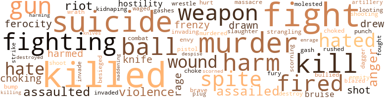
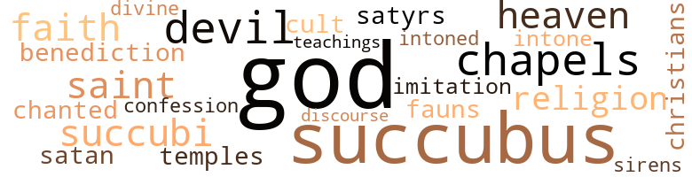

Mind Reader (The), by Roberts, Walter A. (1911)
61 music-related terms matched in this text.
Most frequent terms in this topic: tambourine (13); dance (4); section (4); instrument (4); rap (3)
carol.v.01
Definition: sing carols
| word | sentence |
|---|---|
| carol | He had started to carol an especially ribald verse concerning the well-known " Mademoiselle from Armentieres . " |
dance.n.01
Definition: an artistic form of nonverbal communication
| word | sentence |
|---|---|
| dance | I had dinner alone , and might then have worked on the case before going to see Owen if I had not remem - bered an engagement with friends of my sister , Eleanor , who were giving a dance . |
| dance | But the memory of her was vague to me now , and a dance given by the younger set seemed the most naive proposition in the world . |
| dance | It scarcely appeared pos - sible that less than a week ago I had jazzed and flirted with Roberta at the dance given by Eleanor . |
dance.v.03
Definition: skip, leap, or move up and down or sideways
| word | sentence |
|---|---|
| dance | I dance well , play tennis and am always willing to join a boating party in summer . |
ditty.n.01
Definition: a short simple song (or the words of a poem intended to be sung)
| word | sentence |
|---|---|
| ditty | He whistled a few bars of the " Armentieres " ditty as he sent us flying upwards . |
flourish.n.05
Definition: (music) a short lively tune played on brass instruments
| word | sentence |
|---|---|
| flourishes | It cov - ered the width of the page , and was in the flowing Armenian script which suggests nothing so much as the decorative flourishes of an expert penman . |
foreword.n.01
Definition: a short introductory essay preceding the text of a book
| word | sentence |
|---|---|
| foreword | I think the solitary fellow was not overly glad to see me , and my foreword regarding my errand failed to win even the flicker of an eyelash . |
jazz.v.01
Definition: play something in the style of jazz
| word | sentence |
|---|---|
| jazzed | It scarcely appeared pos - sible that less than a week ago I had jazzed and flirted with Roberta at the dance given by Eleanor . |
music.n.01
Definition: an artistic form of auditory communication incorporating instrumental or vocal tones in a structured and continuous manner
| word | sentence |
|---|---|
| music | " Them words is music in my ears , " fairly chuckled Nolan . |
musical_instrument.n.01
Definition: any of various devices or contrivances that can be used to produce musical tones or sounds
| word | sentence |
|---|---|
| instrument | Something similar can be extracted from an over-taut treble string of a musical instrument . |
| instrument | " This is a means of concentrating and of giving the dead an instrument through which they may send messages , " I elucidated in A.B.C. terms . |
| instruments | A few exchanges were functioning with the new dial instruments , but generally speaking the city 's tele - phone service had been cut off at a blow . |
| instrument | It was not her fault , for she was an instrument without a will . |
| instrument | She became as she had been on two former occasions - a docile instrument in my hands . |
phrase.n.02
Definition: a short musical passage
| word | sentence |
|---|---|
| phrases | I did not begin to make out the actual phrases used by the Presence . |
| phrase | I had some - thing special to say , but wondered how I could phrase it and yet maintain the fiction with Peter that Owen and I were not relatives . |
| phrases | I felt the phrases rather than heard them , but all the pedal values of my brother 's inflection were con - veyed to me . |
piano.n.01
Definition: a keyboard instrument that is played by depressing keys that cause hammers to strike tuned strings and produce sounds
| word | sentence |
|---|---|
| piano | At the far end was a raised platform , on which stood a table , a wooden screen , a small upright piano and three chairs . |
pipe.n.04
Definition: a tubular wind instrument
| word | sentence |
|---|---|
| pipe | His fingers tightened on my wind - pipe , and my clutching at his forearms had no more effect than if I had tried to tear the branches of a great tree loose from its trunk . |
prologue.n.01
Definition: an introduction to a play
| word | sentence |
|---|---|
| prologue | But it was merely the prologue to events of more sinister import . |
rap.n.05
Definition: genre of African-American music of the 1980s and 1990s in which rhyming lyrics are chanted to a musical accompaniment; several forms of rap have emerged
| word | sentence |
|---|---|
| rap | I cried out in terror , but Owen swung around and silenced me with a rap of his knuckles on my mouth . |
| raps | The table began to pulse all over , and presently there came a succession of distinct raps at the very core of the wood , as if it had been hit from below by an unseen knuckle . |
| raps | The table quivers under their hands , raises itself upon two legs and raps upon the floor . |
| rap | The code is , one rap for No , two for Doubtful and three for Yes . |
| rap | We no longer cared a rap about that empty house . |
rhythm.n.04
Definition: the arrangement of spoken words alternating stressed and unstressed elements
| word | sentence |
|---|---|
| rhythm | Then she swung her hips and arms in a con - temptuous rhythm and sauntered over to the window , where she stood with her back toward us . |
section.n.01
Definition: a self-contained part of a larger composition (written or musical)
| word | sentence |
|---|---|
| section | We stepped out on to Columbia Heights to find the streets deserted beyond their wont , and the section is at no time a busy one . |
| section | The sidewalks became crowded as we approached Atlantic Avenue , and from the Borough Hall section there was a rumble of innumerable voices . |
| section | Baltic Street is a somewhat run-down thorough - fare to the south of the Brooklyn Heights residential section . |
| section | " Tim Nolan , of Pioneer Street , this section . " |
sing.v.02
Definition: produce tones with the voice
| word | sentence |
|---|---|
| sang | She will guard the place , and we can probably get in touch with the right kind of control , " said Owen , with his almost inhuman sang froid . |
| sing | I also told these people that they would have a different song to sing when Peter arrives . " |
song.n.01
Definition: a short musical composition with words
| word | sentence |
|---|---|
| song | I also told these people that they would have a different song to sing when Peter arrives . " |
suite.n.01
Definition: a musical composition of several movements only loosely connected
| word | sentence |
|---|---|
| suite | The room was at the far end of Holcombe & Glick 's suite . |
tambourine.n.01
Definition: a shallow drum with a single drumhead and with metallic disks in the sides
| word | sentence |
|---|---|
| tambourine | It would be no greater miracle than the passing of the tambourine through the screen by Daniel Buwalda . " |
| tambourine | Encountering the tambourine , he clutched it with a convulsive gesture and apparently passed it clear through the middle panel of the screen . |
| tambourine | His hand stopped at the wooden surface on his side , but the tambourine , which was some eight inches in diameter , had gone through . |
| tambourine | The moment the tambourine had touched the screen , I had felt a jolt and a rending sensation in my ; brain . |
| tambourine | The inexplicable phenomena lasted no longer than the time it took for the tambourine to travel from Buwalda 's hands into those of the woman he had ad - dressed as Coralie . |
| tambourine | He snatched up the tambourine , and again passed it through the screen to Coralie . |
| tambourine | When Buwalda passes one solid object through an - other - as , for instance , a tambourine through a screen - is his mind simultaneously enabled to penetrate other minds ? " |
| tambourine | same Coralie Griffin whom I had seen assist Buwalda with the tambourine and the screen . |
| tambourine | She had been receiving from the medium 's hand a tambourine that had been passed through solid matter , and at the same moment I had seen pictures of the Griffin library , the exterior of the Griffin town house . |
| tambourine | The table bore various stock properties , such as a human skull , a tambourine , pencils and papers , packs of cards and so forth . |
| tambourine | But when the tambourine touched the wooden screen , you saw an action picture of James Griffin in his library ? " |
| tambourines | But at seances , when she could actually see him pass tambourines through screens , and so forth - ah , it was different then ! |
| tambourine | " Owen , tell me what the tambourine and the screen had to do with all this ? " |
| tambourine | Buwalda per - formed that miracle with the tambourine and the screen , or we 'll assume he did . |
tone.v.01
Definition: utter monotonously and repetitively and rhythmically
| word | sentence |
|---|---|
| chanted | " We shall now progress to an operation of the greatest delicacy , " chanted Buwalda . |
| intone | The party about the grave was blotted out , but I could hear the voice of the clergyman starting to intone the commitment of " dust to dust and ashes to ashes . " |
| intoned | " Anna Wagner , you will now pass into a trance similar to the one that possessed you two evenings ago , " I intoned solemnly . |
tune.n.01
Definition: a succession of notes forming a distinctive sequence
| word | sentence |
|---|---|
| line | I made a bee line for it , though I was far from knowing what action I would take when I got there . |
| line | The last named is the dividing line between Brooklyn Heights proper and the district now known as Red Hook , formerly South Brooklyn . |
| line | A single trunk street-car line , which runs down Court Street to Gowanus Bay , is its sole link with the heart of the borough . |
upright.n.02
Definition: a piano with a vertical sounding board
| word | sentence |
|---|---|
| upright | Sitting bolt upright and staring ahead of her , she had seemed unaware of the tumult . |
violin.n.01
Definition: bowed stringed instrument that is the highest member of the violin family; this instrument has four strings and a hollow body and an unfretted fingerboard and is played with a bow
| word | sentence |
|---|---|
| violin | She rushed upon the hideous bats , shrilling her high-pitched scream that resembled the tone of a violin string which has been stretched too tautly . |
| violin | I am the bow of the violin ; you are the many strings . " |
whistle.v.01
Definition: make whistling sounds
| word | sentence |
|---|---|
| whistle | Then a police whistle sounded shrilly through the fog . |
| whistled | He whistled a few bars of the " Armentieres " ditty as he sent us flying upwards . |
| whistle | At that moment a policeman 's whistle sounded , and the mass of vehicles came to a halt . |
216 violence-related terms matched in this text.
Most frequent terms in this topic: killed (18); fight (16); suicide (12); kill (10); murder (9)
anger.n.01
Definition: a strong emotion; a feeling that is oriented toward some real or supposed grievance
| word | sentence |
|---|---|
| anger | My fear had been that the hot-blooded Armenian would be moved to an insane anger by these revela - tions , and so become useless to me . |
| anger | To my astonishment , Owen went white with anger . |
| anger | But the Armenian was flaming with an anger that placed him far beyond my control . |
assail.v.01
Definition: attack someone physically or emotionally
| word | sentence |
|---|---|
| assaulted | " Footpads assaulted us , " he said . |
| assaulted | I described the adventure of the evening before , though I modified it to the extent of implying that I had been alone when assaulted . |
| assaulted | We were spied upon , and assaulted by madmen . |
attack.v.01
Definition: launch an attack or assault on; begin hostilities or start warfare with
| word | sentence |
|---|---|
| assailed | But suddenly my coat was roughly seized from behind , and a vicious snarl assailed my ears . |
| assailed | A shadow fell across the table , and a rank animal odor assailed my nostrils . |
| assailed | Then a phenomenon that I had never before experienced assailed my inner senses . |
besiege.v.01
Definition: surround so as to force to give up
| word | sentence |
|---|---|
| besieged | " But the lobby is besieged , " I protested . |
blaze_away.v.02
Definition: shoot rapidly and repeatedly
| word | sentence |
|---|---|
| blazed | He placed the muzzle of his huge gun close to the lock of the inner door and blazed away with deadly expertness . |
bruise.n.01
Definition: an injury that doesn't break the skin but results in some discoloration
| word | sentence |
|---|---|
| bruise | There was a red bruise in the middle of the forehead , but evidently the skull had not been pierced . |
| bruise | The red bruise on the fellow 's forehead , where the bullet had struck , fascinated me . |
bump.n.01
Definition: a lump on the body caused by a blow
| word | sentence |
|---|---|
| bump | i She walked past me into the room , mechanically swerving a few inches from her course to avoid bump - : ing into Peter , and came to a rigid halt by the fire - place . |
contemn.v.01
Definition: look down on with disdain
| word | sentence |
|---|---|
| scorning | If they know more about Dr. Proteus than we do , how are we justified in scorning their distrust of him ? " |
| scorned | Surely an adept mystic would have | scorned to imitate lesser practitioners , I thought . |
| despise | When we Armenians despise any one , we call him a Turk . |
craze.n.02
Definition: state of violent mental agitation
| word | sentence |
|---|---|
| frenzy | In the lobby of the building , we found a stone bench in a quiet corner , and I faced Peter with a touch of frenzy . |
| frenzy | My words stung him to a frenzy of action . |
cut.n.05
Definition: a wound made by cutting
| word | sentence |
|---|---|
| gash | Neverthe - less , he had given himself a mortal gash which had been bleeding copiously under his overcoat . |
| gashes | There were gashes made by fire axes on all the doors . |
dagger.n.01
Definition: a short knife with a pointed blade used for piercing or stabbing
| word | sentence |
|---|---|
| dagger | The former passed clear through the latter , as easily as a sharp dagger would pierce a lump of cheese . |
destroy.v.04
Definition: put (an animal) to death
| word | sentence |
|---|---|
| destroy | They were demons , come to destroy him and , incidentally , the rest of the com - pany . |
| destroyed | I did not know how it had been accomplished , but I felt that his power had been destroyed . |
draw.v.23
Definition: pull (a person) apart with four horses tied to his extremities, so as to execute him
| word | sentence |
|---|---|
| drawn | On the avenue , however , we found three taxis drawn up by the curb . |
| drew | A few minutes later , we drew up in front of the Kanarjian home on Henry Street . |
| drew | We laid the pots of paste and rolls of wall paper to one side , drew up the chairs to the table and sat down . |
| drawn | I crouched lower on the window seat , one leg drawn up under me , a chill of terror mounting to my heart . |
engage.v.07
Definition: carry on (wars, battles, or campaigns)
| word | sentence |
|---|---|
| waged | " He has suspended the campaign of terror that he waged against the public today . |
enrage.v.01
Definition: put into a rage; make violently angry
| word | sentence |
|---|---|
| enrage | Only women enrage her anyway . " |
envy.n.01
Definition: a feeling of grudging admiration and desire to have something that is possessed by another
| word | sentence |
|---|---|
| envy | The other feminine devotees stared at her with a bitter and unconcealed envy . |
ferocity.n.01
Definition: the property of being wild or turbulent
| word | sentence |
|---|---|
| ferocity | " We might just as well pitch in and be done with it , Hugh , " added Peter in odd , fiat tones , in which I detected an undercurrent of ferocity . |
| ferocity | " You must continue , " he cried , with a ferocity of which I had not believed him capable . |
fight.n.02
Definition: the act of fighting; any contest or struggle
| word | sentence |
|---|---|
| combat | We knew that we were on our way to take part in a forlorn hope , but at least it promised to be a physical combat , and no man of ordinary courage shrinks from such a test . |
| fighting | The ride down Fifth Avenue was like a tour across a battlefield just after the fighting has stopped . |
fight.n.05
Definition: a boxing or wrestling match
| word | sentence |
|---|---|
| fight | " And if the fight had been won by the - the de - mon ? " |
| fight | There might be chinks in Buwalda 's armor - a thought that lent hope of success to our fight against him . |
| fight | I re - flected wrathfully that I probably had a fight on my hands , anyway . |
| fight | I knew it to be a hopeless fight , unless help came to us . |
| fight | I felt that it would be madness to start a fight in the circumstances . |
| fight | " It may mean a fight . " |
fight.v.02
Definition: fight against or resist strongly
| word | sentence |
|---|---|
| fought | They fought from end to end of the apartment , knocking over chairs and jolting vases and books from the shelves , yet keeping outside the ring of ash that enclosed us . |
| fight | We are leagued together to fight Buwalda , and after you 've shared my knowledge we 'll both be the stronger for it . " |
| fighting | We now tumbled out to the sidewalk , and I at least was fighting mad . |
| fighting | But , as I might have guessed , the fighting Irish lunatic had no notion of managing the situation with diplomacy . |
| fight | " We 'll fight our way by , if we have to . " |
| fight | You desire me to fight him , yet I can not do that successfully until I have his secret . " |
| fighting | " The detail was worth fighting for . " |
| fighting | It was one thing to say that our motives in fighting Buwalda were humanitarian ; but did this wholly justify us for using , against her will , a girl who loved him ? |
| fight | " He 's a daredevil who could fight his way out of any tight corner . " |
| fight | If he has already found it , he will fight like a mad wolf to keep it . " |
| fight | We must fight back , though I was painfully aware how slight were our chances of success . |
| fighting | He turned and rushed down the corridor , a fighting Irish lunatic if ever there was one . |
| fighting | Why was he - the mind reader - reduced to fighting for his life with commonplace weapons , behind a heap of furniture ? |
| fight | I suppose you wonder why I left you to fight Buwalda alone ? " |
| fight | I swear by all I hold sacred that if he chooses the path of evil , I shall fight him to the death , with ten times the energy that I gave to fighting the monster of Baltic Street . |
| fighting | I swear by all I hold sacred that if he chooses the path of evil , I shall fight him to the death , with ten times the energy that I gave to fighting the monster of Baltic Street . |
| fight | Such power makes him about the most dangerous man in the world for us to fight . |
| fight | But we re going to fight him . " |
fury.n.01
Definition: a feeling of intense anger
| word | sentence |
|---|---|
| fury | Peter , his face contorted with fury , his eyes blazing , was bearing down wildly upon me . |
| rage | He was too insane with rage to give me a direct answer . |
| rage | In my rage , I only knew that I wanted to kill . |
gag.v.06
Definition: cause to retch or choke
| word | sentence |
|---|---|
| choking | While I was choking you , you cried out again and again . |
| choke | I acted as if his wishes was O.K. with me , but I was thinkin ' : ' I hope you choke , you big stiff ! ' |
| choked | She choked for a few seconds in agonized fashion , and her eyes rolled . |
| choking | I was choking with eagerness to be alone with Owen , where no one could overhear us , and to discuss the latest develop - ments in our great affair . |
gun.n.01
Definition: a weapon that discharges a missile at high velocity (especially from a metal tube or barrel)
| word | sentence |
|---|---|
| gun | This girl , as timid as x hare , who ordinarily would have fainted if a gun had been fired in her direction , had maintained the poise of a visitor from another world to whom human strife was meaningless . |
| gun | Have you got a gun ? " |
| gun | Balancing himself upon one elbow , Nolan reloaded his gun . |
| gun | He placed the muzzle of his huge gun close to the lock of the inner door and blazed away with deadly expertness . |
| guns | We raised our guns and fired steadily at the barricade for perhaps half a minute . |
| gun | When we had almost covered the distance , a gun roared at us point blank . |
| gun | In his right hand , Buwalda held a gun . |
| guns | Knives and guns were swiftly produced . |
harm.v.01
Definition: cause or do harm to
| word | sentence |
|---|---|
| harm | He hates the professor and would do him harm . |
| harmed | If I reveal too much , it may draw a vengeance upon this company - not upon me , who am immaterial and can not be harmed . " |
| harmed | " No one has harmed my people , " he announced . |
| harm | You need not fear that I will ever harm humanity . " |
| harming | I want you to be very discreet , and if you find Buwalda to let me know without harming him . |
hate.v.01
Definition: dislike intensely; feel antipathy or aversion towards
| word | sentence |
|---|---|
| hated | I hated to give him the chance . |
| hated | Imagine , if you are able to do so , how I hated myself ! " |
| hated | I was bothered also by the feeling that I had seen this man before , in painful circumstances the memory of which I hated to face . |
| hated | I ran into him on the street just now , and I hated to let go of him . |
| hate | to rejoice that I hate cops the way I hate them . " |
| hate | to rejoice that I hate cops the way I hate them . " |
| hates | He hates the professor and would do him harm . |
| hates | She hates the female of our breed . |
| hated | I gave the Armenian the privilege of killing him - the Armenian who hated him so , and who loved Coralie . |
hostility.n.01
Definition: a hostile (very unfriendly) disposition
| word | sentence |
|---|---|
| hostility | " The hostility of the evil ones did not trouble me half so much as the caution of those who appeared to be our friends . " |
| hostility | In the face of increasing hostility on the su - pernatural plane , how could we continue to dream of victory ? |
hostility.n.02
Definition: a state of deep-seated ill-will
| word | sentence |
|---|---|
| enmity | " Henry Dickinson says that the professor is fright - ened at the enmity of Owen Purcell , whose knowledge he respects , " Anna continued . |
injury.n.01
Definition: any physical damage to the body caused by violence or accident or fracture etc.
| word | sentence |
|---|---|
| harm | " Luckily , no harm 's done . |
| harm | " The being who keeps me from harm , so long as I remain here , is Vulpia . |
| harm | I meant no harm , " I replied lamely . |
| harm | The reader no doubt will have understood as quickly as I did that Buwalda had been made harm - less by the absence of Coralie , even before he had been shot by Peter . |
| harm | No harm in looking at what you 've got , " cut in Owen quickly . |
| harm | The harm 's already done . |
invade.v.01
Definition: march aggressively into another's territory by military force for the purposes of conquest and occupation
| word | sentence |
|---|---|
| invaded | But Peter and I had no sooner left the house on Columbia Heights than I knew we were to be targets for trouble , whether we invaded Red Hook at once or postponed our errand . |
| invading | I needed no one to in - form me that it was a case of possession by an invading spirit . |
| invade | But Owen was speaking to me rapidly , sternly : " We shall now invade Number Five Thousand and Eleven . |
kidnap.v.01
Definition: take away to an undisclosed location against their will and usually in order to extract a ransom
| word | sentence |
|---|---|
| kidnaping | " We are to go the lengths of kidnaping that girl ? |
kill.v.10
Definition: cause the death of, without intention
| word | sentence |
|---|---|
| killed | It nearly killed me . " |
| killed | We shook hands gravely , then killed several minutes in offering cigarettes to each other and lighting them . |
| killed | " For one thing , she seemed to have no understand - ing of why her husband killed himself . |
| kill | In my rage , I only knew that I wanted to kill . |
| kill | I was being told to kill Buwalda . |
| kill | " Would it not be simpler to kill him , as you had the chance to do just now ? " |
| kill | He 'll not hesitate to kill you at the first chance . " |
| killed | " I tell you , Hugh , this affair wo n't see its finish until the devil behind it all is killed . " |
| killed | Ten civilians and two marines had been killed in the general fracas that followed . |
| kill | I 'll let you kill me first . " |
| killed | I have never learned to this day whether he killed any of the gangsters who tried to stop us as we thun - dered around the turning . |
| killed | Then he sent her a cough syrup that had been doctored and that killed her , Merciful God ! |
| kill | I knew these Things to be demons , and I wav sure that as soon as they were close enough they would kill us . |
| killed | The blow-up at the Navy Yard killed more than five hundred men . |
| killed | " If only you had killed the vile Turk when you saw him in the cemetery ! " |
| killed | Why , I had had it from Griffin 's own lips that he had killed himself because he had caught his wife in the arms of a lover ! |
| killed | " We 'll probably be killed at it . |
| killed | " You mean that he may have killed you before I get back ? " |
| killed | We 're askin ' to be killed , so why wait ? " |
| kill | It would seem that every moment we continued f stand there in the open , we were inviting him to kill us at his pleasure . |
| kill | At all events , I could not have brought myself to kill him at that moment . |
| killed | " You 've killed him . |
| killed | " I have killed a monster , " he growled . |
| killed | Peter threw open the doors of the closets , as if he feared that the pair we sought had been killed and their bodies concealed fantastically behind the feminine garments that hung inside . |
| kill | It 's a wonder she did n't kill the girl . |
| killing | I gave the Armenian the privilege of killing him - the Armenian who hated him so , and who loved Coralie . |
| killed | But it is being said here that she was his mistress , and that Mr. Griffin killed himself because of grief when he found it out . " |
| killed | The latter chanced to have foes on three sides of him , and would probably have been killed if the fracas had gone beyond the shouting stage . |
| kill | Let us go to Buwalda 's house and kill him . " |
knife.n.02
Definition: a weapon with a handle and blade with a sharp point
| word | sentence |
|---|---|
| knife | The handle of a knife stood out starkly upon the breast of one of them . |
| knife | He also tapped the planking with his knuckles , and ran the blade of a pocket knife down all the crevices . |
| Knives | Knives and guns were swiftly produced . |
looting.n.01
Definition: plundering during riots or in wartime
| word | sentence |
|---|---|
| looting | But , on the other hand , roving bands of desperados were looting in certain streets , and the occasional taxis we met were filled with men whose errands I felt sure were evil . |
madden.v.03
Definition: make mad
| word | sentence |
|---|---|
| maddening | It was maddening not to understand what he was saying , especially as his words served to fan higher the flame of turmoil . |
malice.n.01
Definition: feeling a need to see others suffer
| word | sentence |
|---|---|
| spite | I approached the pathetic visitor and studied her , amazed in spite of my lore at her death-like detach - ment from the waking world . |
| spite | In spite of her American name , which after all might have been acquired by marriage , that dark beauty was Armenian - possibly Syrian - or I missed a bet . |
| spite | But the driver , in spite of his loud talk , was slow in Starting . |
| spite | " I - I love the professor - in spite of all - and I do not want to help his enemies . " |
| spite | In spite of the fact that my mind had been prepared for it , I was astounded by the next development . |
| spite | I noted a bulge in his coat at the back , and I guessed that in spite of his conventional exterior he was carrying a revolver . |
molest.v.01
Definition: harass or assault sexually; make indecent advances to
| word | sentence |
|---|---|
| molested | " Were n't you molested ? " |
murder.n.01
Definition: unlawful premeditated killing of a human being by a human being
| word | sentence |
|---|---|
| murder | and suddenly I knew who it was I was about to murder . |
| murder | He had been used to strike at me , and the objective had been murder . |
| murder | I did not doubt that the casket contained the body of the man who had come to his death as the result of murder by suggestion . |
| murder | But I had no stomach for murder . |
| murders | " The town 's gone crazy , because of the murders and no telephones . |
| murder | Once in the flesh , on the occasion of his suicide , or murder , call it which you will . |
| murder | The hoodwinking of old women would inevitably have been part of his game , though I had not thought him capable of com - mitting a crude , physical murder . |
| murder | It would mean that he would make his appearance di - rectly in front of the barricade , and if Buwalda were alive he could murder Nolan at short range . |
| murder | It was murder , " I gasped . |
| murder | " Certainly it was murder . |
| Murder | Murder by suggestion . |
murder.v.01
Definition: kill intentionally and with premeditation
| word | sentence |
|---|---|
| murdered | " You 've murdered one man as a beginning . |
musket_ball.n.01
Definition: a solid projectile that is shot by a musket
| word | sentence |
|---|---|
| ball | He took out a little crystal ball , into which he gazed for a few minutes . |
| ball | He reached for his crystal ball again and stared into it . |
| balls | A neat black mustache which I had worn to masquerade balls completed my disguise . |
| ball | I held a teaspoon in one and a napkin crumpled into a ball in the other . |
| ball | Owen cupped his crystal ball in both palms and into it . |
| ball | He was aware speedily of what to expect , and he concentrated upon his crystal ball . |
| ball | I had noticed it , rolled into a ball be-tween her fingers , as we had sat at the bare deal table in the empty flat . |
| balls | He thrust this formidable piece of artillery at arm 's length , and poured a volley of six balls in the direc - tion of the front door of the apartment . |
open_fire.v.01
Definition: start firing a weapon
| word | sentence |
|---|---|
| fired | A dozen revolvers were fired . |
| fired | This girl , as timid as x hare , who ordinarily would have fainted if a gun had been fired in her direction , had maintained the poise of a visitor from another world to whom human strife was meaningless . |
| fired | He fished a revolver from his papers , but before he could use it Owen had whipped out his automatic and fired point blank into the other 's face . |
| fired | The bullet I fired at him was made of wax . |
| fired | After he had fired , he threw himself flat . |
| fired | We raised our guns and fired steadily at the barricade for perhaps half a minute . |
| fired | He looked and he fired at a point definitely to the left , as though it were there that he imagined me to be . |
pain.v.02
Definition: cause emotional anguish or make miserable
| word | sentence |
|---|---|
| hurt | It would inevitably hurt him to learn that Coralie was so ready to follow the medium 's whims . |
pistol.n.01
Definition: a firearm that is held and fired with one hand
| word | sentence |
|---|---|
| pistol | Then came the hellish racket of an automatic pistol discharged at short range , and bullets hummed about our ears . |
punch.n.01
Definition: (boxing) a blow with the fist
| word | sentence |
|---|---|
| punch | I helped to prepare the pink lemonade with the modest addition of bacardi that justified calling it a punch . |
punch.v.01
Definition: deliver a quick blow to
| word | sentence |
|---|---|
| plug | " S-a-ay ! " he drawled , " we 'll plug our way in there , as easy as lookin ' at yer . " |
riot.n.01
Definition: a public act of violence by an unruly mob
| word | sentence |
|---|---|
| riot | It had taken a riot call for the policemen from four station houses to subdue and arrest the survivors of the squad . |
| riots | Now , with the life of the city disrupted by bloody riots , with the collapse of the tele - phone system and a demoralized police force , every one was in danger . |
| riot | " Thank God the riot is over ! " he said . |
rush.v.02
Definition: attack suddenly
| word | sentence |
|---|---|
| rushed | But as we rushed at them , they were gripped by a fan - tastic delusion concerning us . |
shoot.v.02
Definition: kill by firing a missile
| word | sentence |
|---|---|
| shot | They had shot their lieutenant and all their petty officers when the latter had tried to restore order . |
| shoot | " We are to shoot our way into Buwalda 's apart - ment - is that it ? " |
| shot | The reader no doubt will have understood as quickly as I did that Buwalda had been made harm - less by the absence of Coralie , even before he had been shot by Peter . |
shooting.n.02
Definition: killing someone by gunfire
| word | sentence |
|---|---|
| shooting | The shooting would come afterwards . |
slaughter.n.03
Definition: the savage and excessive killing of many people
| word | sentence |
|---|---|
| slaughter | My firm was not on the list of those that had been drawn into the slaughter of the morning , though I discovered that my chief had personally added quite a sum to his fortune by trailing along with the winner and stopping in time . |
| massacre | The connection between the Mayor 's strange appointment of Shaw and these later events , the massacre by the ma - rines and the telephone strike , were at last clear to me . |
strangle.v.01
Definition: kill by squeezing the throat of so as to cut off the air
| word | sentence |
|---|---|
| strangling | It was pitched low down in his throat , and was half submerged in awful strangling gasps . |
strike.v.04
Definition: make a strategic, offensive, assault against an enemy, opponent, or a target
| word | sentence |
|---|---|
| strike | But tomorrow there is to be peace until the professor decides whether you are clever enough to strike back at him . " |
strong-arm.v.02
Definition: be bossy towards
| word | sentence |
|---|---|
| bullied | We half dragged , half bullied , the negroes into the closet and snapped the catch on them . |
suicide.n.01
Definition: the act of killing yourself
| word | sentence |
|---|---|
| suicide | " She says it disappeared in Brooklyn the night of the suicide . |
| suicide | This time , however , it was the ghost of the tragic suicide . |
| suicide | He was a self-confessed suicide , and yet if I reported the tragedy I would have a hard time explaining what had happened . |
| suicide | The nature of the wound would then point straight to suicide , un - complicated by the fantastic and almost unbelievable story I had to tell . |
| suicide | Once in the flesh , on the occasion of his suicide , or murder , call it which you will . |
| suicide | Suppose the suicide in the subway car were only a dream , I thought . |
| suicide | James Griffin , the subway suicide , had been a tall man . |
| suicide | The scenes were frag - ments of the very episode which Griffin with his cut throat sketched to you as being the cause of his suicide . " |
| suicide | If that is so , we may believe that he leaped mentally across the space dividing them , took charge of the mind of James Griffin , made him see his wife in an imaginary lover 's arms , suggested to him that the only cure for his grief was suicide . " |
| suicide | But this is a morning of confusion , of dealing with the situation created by suicide in a pub - lic place , " answered Owen shrewdly . |
| suicide | " You have read of the suicide of the Wall Street banker , James Griffin ? " |
| suicide | The newspapers were full of the Griffin suicide , of course , but they told little that was significant to me . |
violence.n.01
Definition: an act of aggression (as one against a person who resists)
| word | sentence |
|---|---|
| Violence | " Violence at every turn ! |
| violence | Then Nolan reversed his engine , and sent the car lurching back-wards with a violence that strained its gear to the breaking point . |
| violence | It was n't a case of ordinary damage , such as burglars might have caused The furniture had been rent apart with a violence ml thoroughness that simply was not human . |
weapon.n.01
Definition: any instrument or instrumentality used in fighting or hunting
| word | sentence |
|---|---|
| weapons | His hands were plunged into his overcoat pockets , where it was safe to assume that he had weapons for an emergency . |
| weapon | I cursed myself for having wasted time in arguing with her when this powerful weapon was available . |
| weapon | " It is an awful weapon to place in the hands of any man . |
| weapon | The silencer on the weapon had reduced the sound of the detonation to a hollow spit - ting , and the powder had been smokeless . |
| weapon | It was well that Owen had supplied me , also , with a weapon . |
| weapons | Why was he - the mind reader - reduced to fighting for his life with commonplace weapons , behind a heap of furniture ? |
| weapons | I observed with amazement that no weapons had been used to chop or saw the wood . |
weapon.n.02
Definition: a means of persuading or arguing
| word | sentence |
|---|---|
| artillery | He thrust this formidable piece of artillery at arm 's length , and poured a volley of six balls in the direc - tion of the front door of the apartment . |
weather.v.01
Definition: face and withstand with courage
| word | sentence |
|---|---|
| brave | All things that his senses record are equally real , or unreal , to a philosopher , and carry no terrors for a brave man . " |
wound.n.01
Definition: an injury to living tissue (especially an injury involving a cut or break in the skin)
| word | sentence |
|---|---|
| wound | The half-parted lips suggested a wound . |
| wound | The Stock Exchange was licking the considerable wound that that implied . |
| wound | The nature of the wound would then point straight to suicide , un - complicated by the fantastic and almost unbelievable story I had to tell . |
| wound | A medical officer from the police department had said that the wound could only have been inflicted with a safety razor blade , detached from its holder . |
wrath.n.01
Definition: intense anger (usually on an epic scale)
| word | sentence |
|---|---|
| wrath | Behind the quick submissiveness he was always ready to give me , I could sense a smoldering wrath which nothing could stop from bursting into flame , I knew , should he ever meet his arch enemy man to man . |
wrestle.v.01
Definition: combat to overcome an opposing tendency or force
| word | sentence |
|---|---|
| wrestle | Be - fore I finished dressing , I had concluded that I did not know enough about the occult to wrestle with the mystery unaided . |
63 religion-related terms matched in this text.
Most frequent terms in this topic: God (18); succubus (11); chapels (3); succubi (2); religion (2)
blessing.n.05
Definition: the act of praying for divine protection
| word | sentence |
|---|---|
| benediction | Buwalda threw his arms wide and raised them in a gesture of benediction . |
chapel.n.01
Definition: a place of worship that has its own altar
| word | sentence |
|---|---|
| chapels | Two small private chapels which served as entrances to vaults stood close together there . |
| chapels | Apparently , it had entered the narrow space between the two chapels . |
| chapels | Instead , he let out a hoarse cry and bolted through the far opening between the chapels . |
christian.n.01
Definition: a religious person who believes Jesus is the Christ and who is a member of a Christian denomination
| word | sentence |
|---|---|
| Christians | " We Armenians are Christians , " he asserted proudly . |
confession.n.05
Definition: the document that spells out the belief system of a given church (especially the Reformation churches of the 16th century)
| word | sentence |
|---|---|
| confession | " I do n't know what got hold of us , " a marine had declared later , in an amazing confession . |
cult.n.03
Definition: followers of an unorthodox, extremist, or false religion or sect who often live outside of conventional society under the direction of a charismatic leader
| word | sentence |
|---|---|
| cult | My close contact with the practice of the cult insures my hearing of any new medium who seems to have ! |
divine.v.01
Definition: perceive intuitively or through some inexplicable perceptive powers
| word | sentence |
|---|---|
| divine | I had not been fully converted to the wisdom of this visit to Buwalda , that creature of infinite cunning , that mind reader who might be able to divine who Owen was and why he had come . |
eden.n.01
Definition: any place of complete bliss and delight and peace
| word | sentence |
|---|---|
| Heaven | The palm was softer than satin , almost too soft , and again found myself wondering what in Heaven 's name this harem woman was doing in the toils of a practitioner of black magic , like Daniel Buwalda . |
| Heaven | Heaven alone knew what he might do in rebuttal . |
faun.n.01
Definition: ancient Italian deity in human shape, with horns, pointed ears and a goat's tail; equivalent to Greek satyr
| word | sentence |
|---|---|
| fauns | He writes that ' sylvans and fauns , ' as he calls them , frequently have commerce with men , and that ' it were impudence to deny it . ' |
god.n.03
Definition: a man of such superior qualities that he seems like a deity to other people
| word | sentence |
|---|---|
| God | The lower sash of a window slided upwards , God only knew how ! |
| God | " For God 's sake , Owen - - that woman , she was more than a ghost . |
| God | Wish to God I did . |
| God | " For God 's sake ! |
| God | " What in God 's name possessed you to do such a thing ? " |
| God | For God 's sake , how was it done ? " |
| God | God knows , it might have been better for myself and the rest of the world if I had done it ! |
| God | " I guess I 'll be set down as a hop-head or worse , but I swear to God that I was struck all of a heap with the idea we were on duty in some Central American town , and that the natives needed a lesson . |
| God | I spoke again : " For God 's sake , tell me what 's wrong . |
| gods | The combination is enough to lure gods and devils . " |
| God | And God knows we 're likely to need her protection soon . " |
| God | The prevailing conditions had not been paralleled in our history , and I pray God may not occur again . |
| God | " But - for God 's sake ! |
| God | What in God 's name did it all mean ? |
| God | God knows what has happened to them ! " |
| God | " I hope to God that Coralie and - and Doctor Proteus , are safe in this flat , " I muttered . |
| God | " Thank God the riot is over ! " he said . |
| god | " If a god should come along , however , and lift the top pane of glass away , you would suddenly find your - self in a three-dimensional world , and it would really be very easy for you to adjust yourself to it . " |
| God | " Why - for God 's sake ! |
| God | " For God 's sake , listen ! " |
imitation.n.01
Definition: the doctrine that representations of nature or human behavior should be accurate imitations
| word | sentence |
|---|---|
| imitation | It might or might not have been the imitation French chateau I had seen in my vision at Buwalda 's seance , for all I could have told on this day of gloom . |
religion.n.01
Definition: a strong belief in a supernatural power or powers that control human destiny
| word | sentence |
|---|---|
| faith | Our com - bined faith made possible the marvel you have just seen . |
| religion | " My religion is the pursuit of knowledge . |
| faith | In the meantime , the faith of Anna in this master criminal was something almost unbearably pathetic . |
| religion | It is a fact that - scientific investigators apart - the male habitues of seances tend to treat their fad as a religion , while women care more for its fortune-telling aspects . |
saint.n.02
Definition: person of exceptional holiness
| word | sentence |
|---|---|
| Saint | " Saint Augustine records that he encountered a succubus more than once . |
| Saint | Read Saint Augustine and Pope Innocent VIII . |
satan.n.01
Definition: (Judeo-Christian and Islamic religions) chief spirit of evil and adversary of God; tempter of mankind; master of Hell
| word | sentence |
|---|---|
| Satan | Satan himself was , of course , supposed to be responsible . |
| devil | An especially officious clerk from Holcombe & Glick 's was speaking to me : " What the devil has been going on here ? |
| devil | " I tell you , Hugh , this affair wo n't see its finish until the devil behind it all is killed . " |
| devils | The combination is enough to lure gods and devils . " |
satyr.n.02
Definition: one of a class of woodland deities; attendant on Bacchus; identified with Roman fauns
| word | sentence |
|---|---|
| satyrs | But more learned authorities held the incubi and succubi to be animal spirits , of the same tribe as the satyrs and nymphs of Greek mythology . |
sermon.n.01
Definition: an address of a religious nature (usually delivered during a church service)
| word | sentence |
|---|---|
| discourse | " You discourse in riddles , Mr. Kanarjian , " I commented , smiling . |
siren.n.01
Definition: a sea nymph (part woman and part bird) supposed to lure sailors to destruction on the rocks where the nymphs lived
| word | sentence |
|---|---|
| sirens | It was broken by the wailing of sirens on fire engines . |
succubus.n.01
Definition: a female demon believed to have sexual intercourse with sleeping men
| word | sentence |
|---|---|
| succubus | A succubus was generally believed in the Dark Ages to be a sort of female demon , which took human shape and tempted the devout into sin . |
| succubi | But more learned authorities held the incubi and succubi to be animal spirits , of the same tribe as the satyrs and nymphs of Greek mythology . |
| succubus | " Saint Augustine records that he encountered a succubus more than once . |
| succubi | Dom Dominic Schram , a mystic of a later date , says : ' It is certain that - whatever doubters may say - there exist such demons , incubi and succubi . ' |
| succubus | Paul Grilland , a French historian of sorcery in the sixteenth century tells categorically of a demon who assumed the form of a succubus . |
| succubus | " Yes , and the chairs knocked over in the struggle between the succubus and the demon are still lying on the floor . |
| succubus | " I take it that demons seldom come , but the succubus does ? " |
| succubus | " The succubus , " he answered , as nonchalantly as if he had reference to the tenant of the neighboring flat . |
| succubus | I expected at any instant to see the succubus , Vulpia , materialize from behind the bookcases . |
| succubus | I reflected , with a curious sense of distaste , that my brother had as good as told me that the succubus was jealous of him , that she was furious because Anna was in his apartment . |
| succubus | I was conscious once more of a sense of horror at the strange bond that evidently existed between the succubus and Owen . |
| succubus | So it was the succubus who did it ! " |
| succubus | It is the nature of a succubus to be devoured by lust . |
teaching.n.02
Definition: a doctrine that is taught
| word | sentence |
|---|---|
| teachings | We Ar - menians are very jealous of the honor of our women , sir , and I can not believe that she did anything worse than follow the teachings of the fellow , who is some sort of religious fanatic . |
temple.n.03
Definition: an edifice devoted to special or exalted purposes
| word | sentence |
|---|---|
| temples | " You 're going to think I 'm a stark staring lunatic , " he began , clamping bodi palms over his temples with Oriental vehemence , and gazing miserably at me . |
tone.v.01
Definition: utter monotonously and repetitively and rhythmically
| word | sentence |
|---|---|
| chanted | " We shall now progress to an operation of the greatest delicacy , " chanted Buwalda . |
| intone | The party about the grave was blotted out , but I could hear the voice of the clergyman starting to intone the commitment of " dust to dust and ashes to ashes . " |
| intoned | " Anna Wagner , you will now pass into a trance similar to the one that possessed you two evenings ago , " I intoned solemnly . |